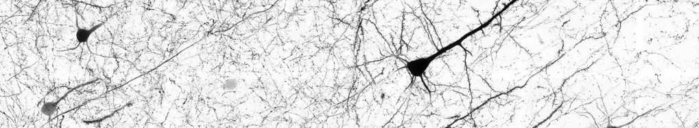

Neural dynamics and control group
Our group is part of the Computational and Biological Learning lab in Cambridge.
We build network-level theories of motor control and learning.
We build network-level theories of motor control and learning.
News
October 2020
See Rutten et al.’s work on non-reversible Gaussian processes (oral), and Jensen et al.’s new manifold GPLVM.
February 2020
October 2019
Welcome to both!
March 2019
He will be giving a perspective talk about the use of control-theoretic methods in neuroscience (slides) at the workshop on data, dynamics and computation, and a talk on the role of inhibition in motor control at the workshop on inhibitory microcircuits
October 2018
Commentary in TICS on recent brain-computer interface results by the Baptista/Yu/Chase groups at CMU
See full text here
September 2018
Motor primitives in space and time via targeted gain modulation in cortical networks
September 2018
See publications
September 2018
Come and join us for an inspiring workshop on “Emergent function in non-random neural networks”, ahead of the main Bernstein Conference